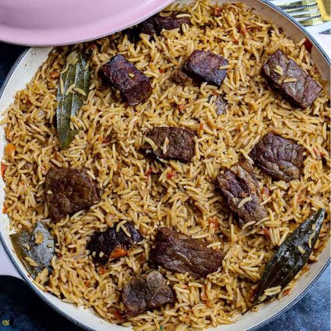

East Africa · Kenya
Pilau
Swahili Spiced Rice with Beef
Fragrant one-pot rice from the Swahili coast, browned with onions and warm whole spices — the star of every Kenyan celebration.
- Total time1 hr 15 min
- Serves6
- DifficultyMedium

The story behind the dish
Pilau is the dish that turns any Kenyan gathering into a celebration — weddings, Eid and Christmas rarely go without it. It was born on the Swahili coast, in port towns like Mombasa, Lamu and Zanzibar, where centuries of Indian Ocean trade brought Arab and Indian cooks together with African ones.
The rich brown colour comes from deeply caramelised onions and toasted pilau masala — a blend of cumin, cardamom, cloves, cinnamon and black pepper. It is almost always served with kachumbari, a fresh tomato and onion salad.
Cooking Instructions
Tap each step to expand it.
1 Brown the onions
- Heat the oil in a large sufuria and fry the onions slowly for 10–12 minutes until deep brown — this gives pilau its colour.
- Add the cumin seeds, cardamom, cloves and cinnamon and fry until fragrant.
2 Add the meat and masala
- Stir in the garlic, ginger and pilau masala and cook for one minute.
- Add the boiled beef and fry for 3–4 minutes so it soaks up the spices.
3 Cook the rice
- Drain the rice and stir it into the pot until every grain is coated.
- Pour in the hot stock, add salt and bring to the boil.
- Lower the heat, cover tightly and cook for 18–20 minutes until the liquid is absorbed.
4 Rest and serve
- Turn off the heat and leave covered for 5 minutes, then fluff with a fork.
- Serve with kachumbari and a squeeze of lemon.
Watch & Cook
Nutrition Facts
| Nutrient | Amount |
|---|---|
| Calories | ≈ 520 kcal |
| Carbohydrates | ≈ 62 g |
| Protein | ≈ 24 g |
| Fat | ≈ 18 g |
| Fibre | ≈ 2 g |